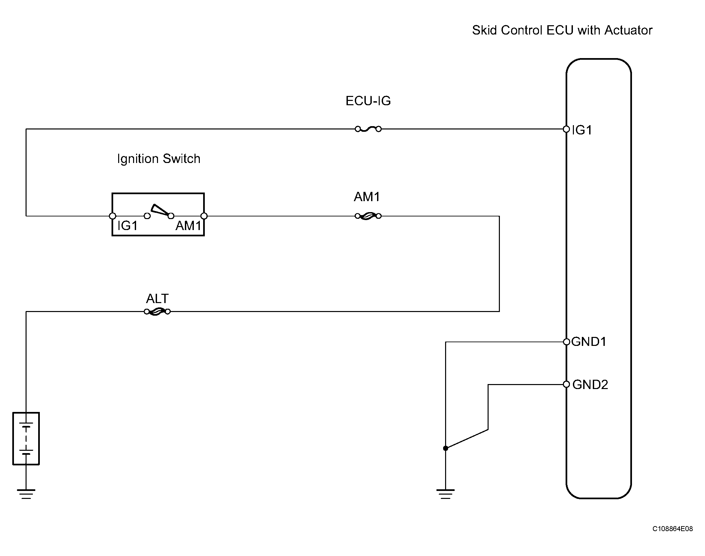

DTC C1241/41 Low Battery Positive Voltage or Abnormally High Battery Positive Voltage: Wiring Diagram
Fig 1: Low/High Battery Positive Voltage Wiring Diagram

Courtesy of © TOYOTA, LICENSE AGREEMENT TMS1002